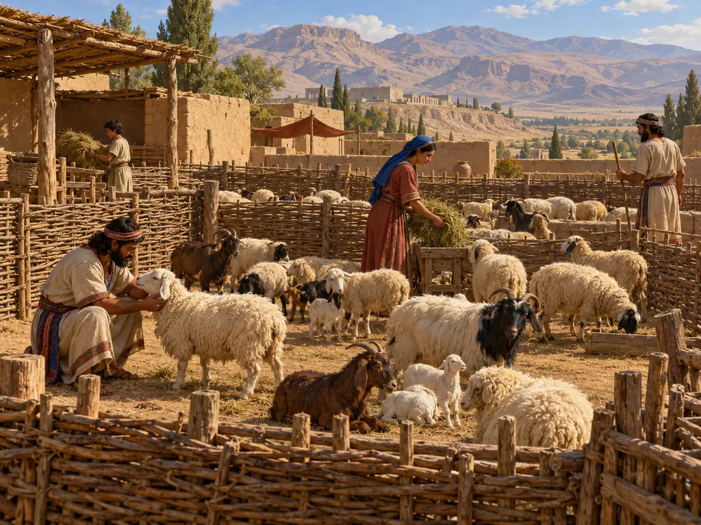
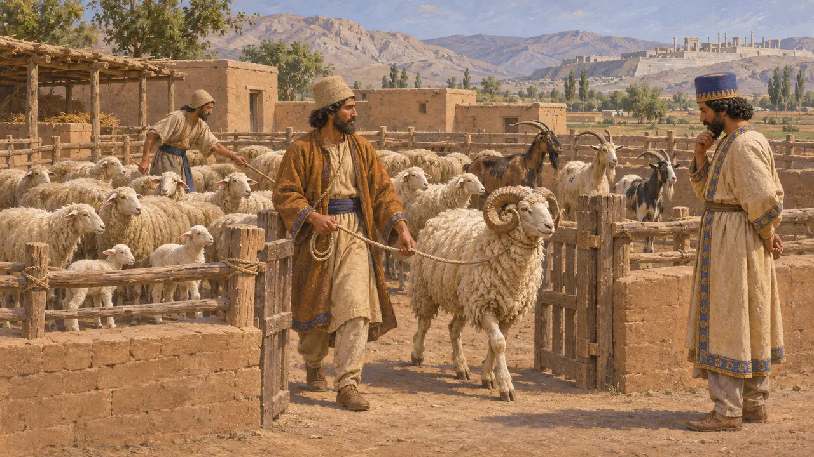
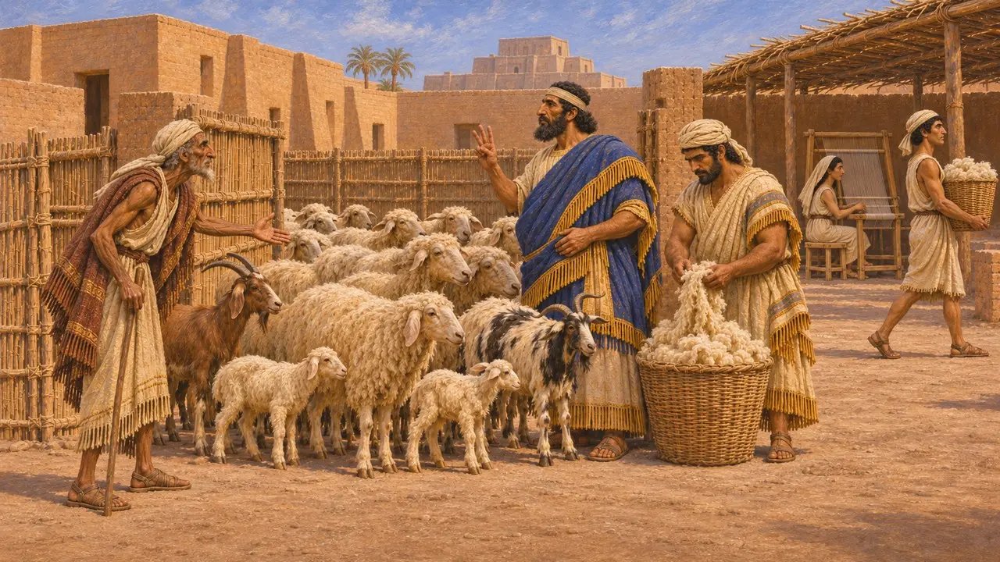
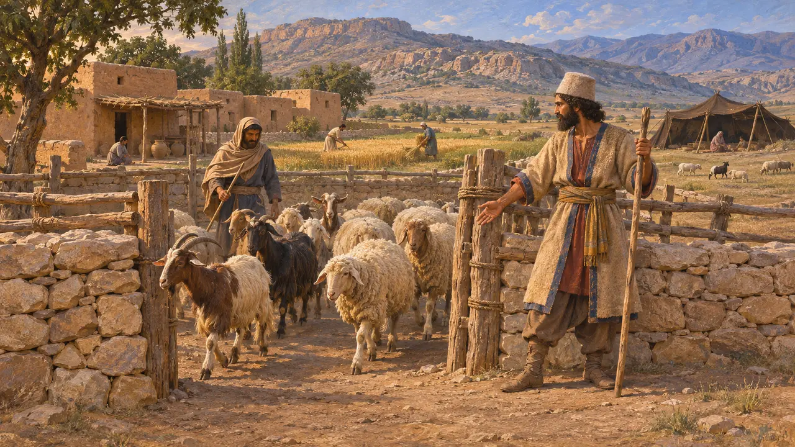
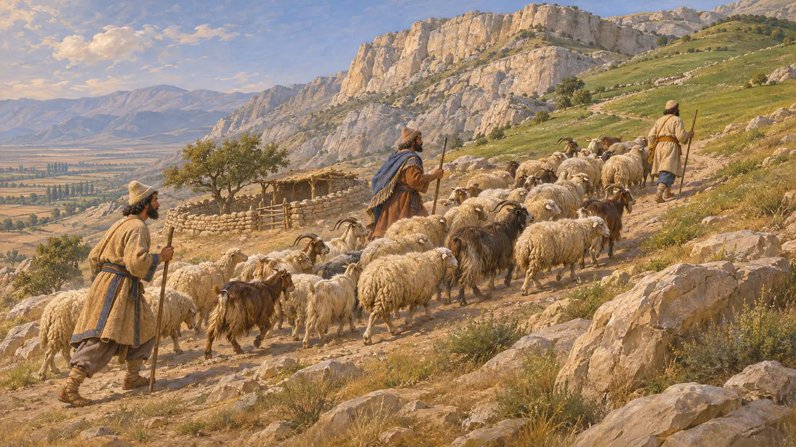
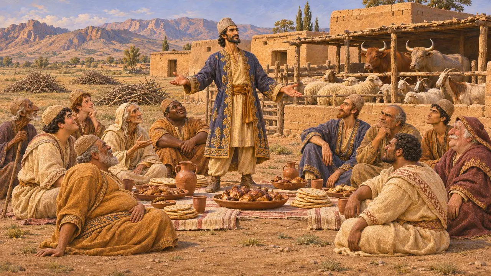

Viehpferch
Schaf- und Ziegenhaltung im gesamten Achämenidenreich, 6. bis 5. Jahrhundert v. Chr.
Im Spiel: Level 4: Die Terrasse
Schafe und Ziegen wurden in jeder Provinz des Perserreichs gehalten. Sie lieferten Fleisch für die königliche Tafel und für Opfer, Milch, Häute, Ziegenhaar und Wolle für Tuch. Die Persepolis-Täfelchen verzeichnen Herden im Besitz der Verwaltung in der Persis, und babylonische Tempelarchive zeigen Herden, die Hirten anvertraut waren; diese schuldeten feste Abgaben an Jungtieren und Wolle.
Im Spiel: Im Pferch werden Schafe und Ziegen gehalten, die Wolle geht an die Weber. Das ist vereinfacht: Ziegen liefern Haar statt Wolle, und viele echte Herden zogen wohl zwischen jahreszeitlichen Weiden umher, statt in einem festen Pferch zu leben.

Herden in den Aufzeichnungen von Persepolis
Zeitgenössisch belegtDie elamischen Täfelchen des Persepolis-Befestigungsarchivs, um 509 bis 493 v. Chr. geschrieben, verzeichnen Schafe und Ziegen im Besitz der Verwaltung rund um Persepolis. Die Tiere wurden nach Art, Alter und Geschlecht gezählt und an Beamte und den königlichen Haushalt sowie für Opfer an die Götter ausgegeben. Auf den Reliefs des Apadana in Persepolis führen mehrere Gesandtschaften unterworfener Völker Widder als Geschenke für den König heran.
R. T. Hallock, Persepolis Fortification Tablets, 1969; W. Henkelman, The Other Gods Who Are, 2008; E. F. Schmidt, Persepolis I, 1953

Tempelherden Babyloniens
Zeitgenössisch belegtDer Eanna-Tempel in Uruk besaß große Herden, die er vertraglich an Hirten übergab. Jeder Hirte schuldete eine festgelegte Zahl von Jungtieren und eine Menge Wolle, und Inspektoren prüften die Herden und forderten Verluste ein. Diese Aufzeichnungen laufen ohne Unterbrechung bis in die Regierungszeiten von Kyros und Kambyses weiter und zeigen, dass die persische Herrschaft das System bestehen ließ. Die Tempelwolle ging an Weber, die Gewänder für die Götterstatuen fertigten.
M. Kozuh, The Sacrificial Economy, 2014

Hirtenvölker der Persis
Antiker BerichtHerodot zählt die persischen Stämme auf und sagt, vier von ihnen, die Daer, Marder, Dropiker und Sagartier, seien Nomaden gewesen, andere wie die Panthialaier, Derusiaier und Germanier hingegen Ackerbauern. Sein Bild ist das eines griechischen Außenstehenden, passt aber zu einer Persis, in der sesshafter Ackerbau und Viehzucht nebeneinander bestanden.
Herodotus 1.125

Mit den Jahreszeiten unterwegs
UmstrittenDie Historiker nehmen meist an, dass die Herden der Persis zwischen Winterweiden im Tiefland und Sommerweiden im Hochland wechselten, wie es die Herden der Region auch in späterer Zeit taten. Die Tafeln beschreiben diese Wege nicht unmittelbar, und die Forschung streitet noch immer darüber, wie weit die frühen Perser nomadische Hirten und wie weit sesshafte Bauern waren. Unklar ist auch, wie oft die Wolle mit Klingen geschoren oder, wie in älterer mesopotamischer Praxis, von Hand ausgerupft wurde.
P. Briant, From Cyrus to Alexander, 2002

Kyros und die Herden seines Vaters
Spätere LegendeHerodot erzählt, wie Kyros, der einen Aufstand gegen die Meder plante, die Perser an einem Tag ein Feld von Dornen roden ließ und sie am nächsten Tag mit den Ziegen, Schafen und Rindern seines Vaters bewirtete. Dann fragte er, welcher Tag ihnen lieber sei – die Freiheit sei das Festmahl, die medische Herrschaft die Mühsal. Die Geschichte ist eine Lehrerzählung und kein Bericht, setzt aber voraus, dass der Reichtum eines persischen Adligen in seinen Herden lag.
Herodotus 1.126
Quellen
- R. T. Hallock, Persepolis Fortification Tablets, 1969
- M. Kozuh, The Sacrificial Economy, 2014
- W. Henkelman, The Other Gods Who Are, 2008
- P. Briant, From Cyrus to Alexander, 2002
- Herodotus 1.125-126
- E. F. Schmidt, Persepolis I, 1953